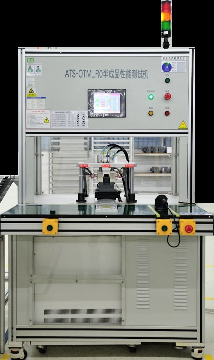
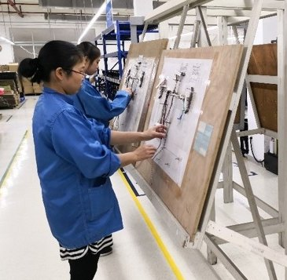
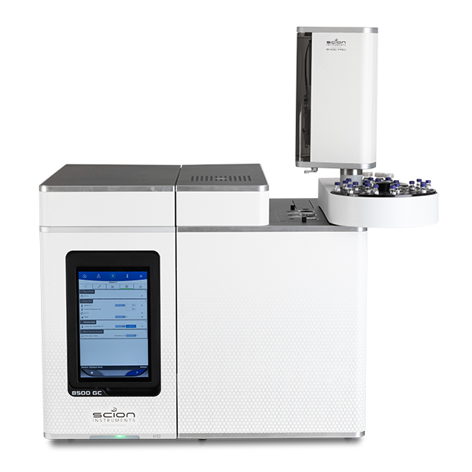
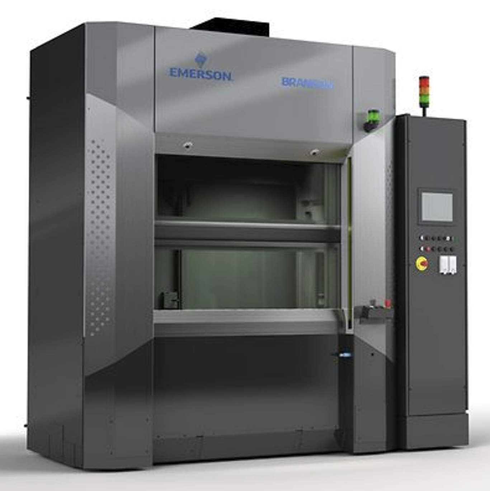
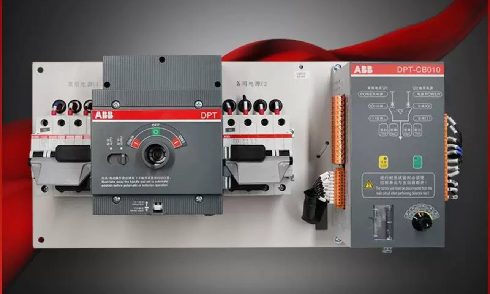

01
01PCBA · SMT
锡膏印刷、高速贴片、回流焊、在线 AOI 与 X-Ray 检查。
0201+ · 510×510mm · 350K pcs/h四条制造能力主线覆盖板卡、线束与整机，测试和质量控制嵌入每个关键工序。
01锡膏印刷、高速贴片、回流焊、在线 AOI 与 X-Ray 检查。
0201+ · 510×510mm · 350K pcs/h 02
02元件成型、自动/手工插装、波峰焊、DI 清洗与过程检验。
THT · Wave Soldering · AOI 03
03压接、焊接与 IDC，覆盖工业、汽车及航空类复杂线束。
0–500kg 拉力 · 32,000 测试点 04
04Box-build、ICT/FCT、固件烧录、老化、环境试验与定制包装。
ICT · FCT · Burn-in · Hi-Pot利华通过 MES 将生产任务、物料批次、工序执行、检验测试与异常处置串联起来，让质量要求落实到制造过程并形成可查询的生产履历。
MES · PROCESS · QUALITY · TRACEABILITY关联生产任务、BOM 与物料批次。
记录关键工序的人员、设备与时间。
汇集制程检验、测试结果与不良信息。
建立生产履历并记录异常处置与改进。
从来料、制程到功能与环境测试，利华按项目要求配置质量关卡和追溯方式。

AOI · X-RAY · ICT · FCT确认 BOM、图纸、测试与质量要求。
完成 DFM、工艺设计、治具和样品验证。
按工序设置检验、测试和追溯节点。
以灵活排产、质量一致性和准时交付支撑长期合作。
制造能力服务于高可靠、复杂装配和多品种项目。

交流/直流充电相关 PCBA 与可靠制造支持。

成分/元素分析等仪器类电子装联。

工业控制与设备侧板卡、组件制造。

电力与能源相关电子装配场景。

利华位于广东台山，厂区占地 50 亩并预留 30 亩扩展用地，生产车间约 7,000 平方米。团队以工程支持、灵活响应和长期合作为核心。